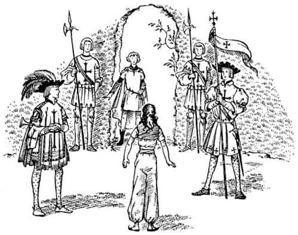
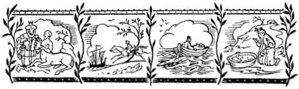
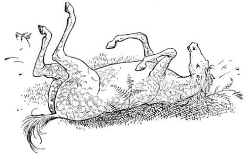

Bree Nasıl Daha Bilge Bir At Oldu?
Şimdi Aravis ve atlara geri dönelim. Münzevi, havuza bakarak Shasta’nın ölmediğini ve hatta tehlikeli bir şekilde yaralanmadığını görebilmişti. Çünkü onun ayağa kalktığını ve Kral Lune tarafından nasıl sevgiyle karşılandığını görmüştü. Fakat savaş sona erip de duyamadığı (sadece görebildiği için kimsenin ne söylediğini bilmiyordu) konuşmalar başladığında, artık havuza bakmanın bir yararı yoktu.
Ertesi sabah Münzevi odasındayken, üçü bundan sonra ne yapmaları gerektiğini tartıştılar.
“Ben bundan bıktım” dedi Hwin. “Münzevi bize çok iyi davranıyor ve kesinlikle ona çok minnettarım. Fakat bütün gün yiyip hiç idman yapmadığım için evcil bir at gibi şişmanlıyorum.”
“Oh bugün olmaz Madam” dedi Bree. “Ben acele etmezdim. Başka bir gün, ne dersin?”
“Önce Shasta’yı görüp ona veda etmeliyiz – ve – ve özür dilemeliyiz” dedi Aravis.
“Kesinlikle!” dedi Bree büyük bir hevesle. “Ben de tam söyleyecektim.”
“Evet, kuşkusuz” dedi Hwin. “Onun Anvard’da olacağını umuyorum. Doğal olarak onu bulup veda etmemiz gerek. Peki, orası yolumuzun üzerinde değil mi? Neden hemen yola çıkmayalım ki? Her şeye karşın herkesin Narnia’ya gitmek istediğini sanıyordum.”
“Sanırım” dedi Aravis. Oraya vardığında tam olarak ne yapacağını merak etmeye başlamıştı; kendini biraz yalnız hissediyordu.
“Elbette, elbette” dedi Bree telaşla, “Hiçbir şeyi aceleye getirmeye gerek yok. Ne demek istediğimi anlıyorsanız tabii.”
“Hayır, ne demek istediğini anlamıyorum” dedi Hwin. “Neden gitmek istemiyorsun?”
“Mmmmm, broo-hoo” diye mırıldandı Bree. “Peki, görmüyor musunuz Madam – bu önemli bir olay – yani birisinin ülkesine geri dönüşü – toplum içine yeniden girmek – en güzel topluma – iyi bir izlenim bırakmak öyle önemli ki – henüz tam anlamıyla kendimize benzemiyoruz belki ha?”
Hwin, at kahkahalarına boğuldu. “Kuyruğun nedeniyle, öyle değil mi Bree? Şimdi anlıyorum. Kuyruğun yeniden uzayana kadar beklemek istiyorsun. Ve biz Narnia’da kuyrukların uzun mu kısa mı tutulduğunu bilmiyoruz. Sen gerçekten Tashbaan’daki o Tarkheena kadar gösterişçisin Bree.”
“Çok komiksin Bree” dedi Aravis.
“Aslan’ın yelesi aşkına Tarkheena! Asla öyle değilim” dedi Bree öfkeyle. “Kendime ve at arkadaşlarıma karşı kusursuz bir saygım var, hepsi bu.”
“Bree” dedi, onun kuyruğunun kesilmesiyle pek ilgilenmeyen Aravis, “uzun zamandır sana sormak istiyordum. Neden Aslan’ın aşkına, Aslan’ın yelesi aşkına deyip duruyorsun? Senin aslanlardan nefret ettiğini düşünüyordum.”
“Evet nefret ederim” diye cevapladı Bree. “Fakat ben Aslan’dan bahsettiğim zaman kuşkusuz Cadı’yı ve kışı bitiren, Narnia’nın kurtarıcısı Aslan demek istiyorum. Bütün Narnialılar onun adına yemin ederler.”
“Peki o bir aslan mı?”
“Hayır, hayır. Elbette değil” dedi Bree epeyce şaşırmış bir sesle.
“Tashbaan’da, hakkında söylenen bütün hikâyeler onun aslan olduğunu söyler” dedi Aravis. “Eğer o aslan değilse neden ona Aslan diyorsunuz?”
“Senin yaşında bunu anlamak zordur” dedi Bree. “Ben Narnia’yı terk ettiğimde sadece küçük bir taydım, bu nedenle ben bile bunu tamamıyla anlamıyorum.” (Bree bunları söylerken arkası yeşil duvara dönük olarak duruyordu ve diğer ikisi onunla yüz yüzeydiler. Gözleri yarı kapalı, epeyce yüksekten bakar biçimde konuşuyordu. Bu nedenle Hwin ve Aravis’in yüzlerindeki değişen ifadeyi görmedi. Ağızlarının ve gözlerinin açılması için iyi bir nedenleri vardı; çünkü Bree konuşurken kocaman bir aslanın dışarıdan yeşil duvarın üzerine atlayarak dikildiğini görmüşlerdi. Ne var ki bu aslan daha parlak sarı, daha büyük ve güzeldi. Gördükleri diğer aslanlardan daha korkutucuydu. Aslan hemen duvarın içine atladı ve Bree’ye arkadan yaklaşmaya başladı. Hiç ses çıkarmıyordu. Hwin ve Aravis de hiç ses çıkaramıyorlardı, sanki donmuş gibiydiler.)
“Kuşku yok ki” diye devam etti Bree, “ondan Aslan diye söz ettiklerinde sadece bir aslan kadar güçlü ya da (elbette düşmanlarımız için) vahşi demek istiyorlar. Aravis, senin gibi küçük bir kız bile, onun gerçek bir aslan olduğunu sanmanın anlamsız olacağını görmelidir. Gerçekte bu saygısızlık olur. Eğer bir aslan olsaydı, geriye kalan hepimiz gibi bir hayvan olmak zorunda kalırdı. Ya!” (Burada Bree gülmeye başladı) “Aslan olsaydı dört pençesi, bir kuyruğu ve bıyıkları olurdu!.. Ay, ooh, hoo! İmdat!”
Tam da bıyıkları derken, Aslan’ın bıyıklarından biri gerçekten onun kulağını gıdıklamıştı. Bree kapalı alanın karşı tarafına bir ok gibi fırladı ve orada geri döndü; duvar onun atlayabilmesi için çok yüksekti ve daha öteye kaçamıyordu. Aravis ve Hwin, beraberce geri geri gitmeye başladılar. Yaklaşık bir dakika korkunç bir sessizlik oldu.
Sonra Hwin, bütün vücudu titreyerek tuhaf bir şekilde kişnedi ve Aslan’a doğru koştu.
“Lütfen” dedi, “o kadar güzelsiniz ki, isterseniz beni yiyebilirsiniz. Başkasına yem olmaktansa sizin tarafınızdan yenmeyi yeğlerim.”
“Sevgili kızım” dedi Aslan, onun seğiren kadife burnuna bir aslan öpücüğü kondurarak. Bana gelmenin uzun sürmeyeceğini biliyordum. Tüm mutluluklar senin olacak.”
Sonra kafasını kaldırdı ve daha yüksek bir sesle konuştu:
“Pekâlâ, Bree” dedi, “seni zavallı, gururlu, ürkmüş at, yakına gel. Daha yakına, oğlum. Denememeyi deneme. Dokun bana. Kokla beni. İşte pençelerim, işte kuyruğum. Bunlar benim bıyıklarım. Ben gerçek bir hayvanım.”
“Aslan” dedi Bree sarsılmış bir sesle, “sanırım ben çok aptalım.”
“Henüz genç yaşında bunu bilen ata ne mutlu. Veya insana ne mutlu. Yakına gel kızım Aravis. Bak! Pençelerim kadife gibi. Bu kez yaralanmayacaksın.”
“Bu kez mi, efendim?” dedi Aravis.
“Seni yaralayan bendim” dedi Aslan. “Bütün yolculuklarında gördüğün Aslan bendim. Seni neden yaraladığımı biliyor musun?”
“Hayır Efendim.”
“İlaçla uyuttuğun üvey annenin kölesinin sırtına vurulan kırbaçlarla, senin sırtındaki yaraların, kanın, ağrının şiddeti aynıdır. Onun nasıl hissettiğini bilmen gerekiyordu.”
“Evet efendim. Lütfen—”
“Sor sevgili kızım” dedi Aslan.
“Yaptığımdan dolayı ona daha fazla zarar gelecek mi?”
“Çocuğum” dedi Aslan, “Ben sana, senin hikâyeni söylüyorum, onunkini değil. Kimseye kendi hikâyesinden başka hikâye anlatılmaz.” Sonra başını salladı ve daha hafif bir sesle konuşmaya başladı.
“Mutlu olun küçükler” dedi. “Yakında yeniden görüşeceğiz. Ancak ondan önce başka bir ziyaretçiniz olacak.” Sonra bir sıçrayışta duvarın üstüne ulaşıp gözden kayboldu.
Söylemesi tuhaftır, o gittikten sonra hiç onun hakkında konuşma gereğini duymadılar. Her biri yavaş yavaş, sakin adımlarla çimliğin başka bir bölümüne gittiler ve orada tek başlarına düşünerek ileri geri yürüdüler. Yaklaşık yarım saat sonra iki at, Münzevi’nin onlar için hazırladığı iyi şeyleri yemek üzere evin arkasına çağrıldılar. Aravis hâlâ yürüyüp düşünürken kapının dışından gelen tiz bir boru sesiyle irkildi.
“Kim var orada?” dedi Aravis.
“Ekselansları Archenlandlı Prens Cor” diye bir ses geldi dışardan.
Aravis kilidi çevirip kapıyı açtı ve yabancıların girmesi için biraz geriye çekildi.
İlk önce, baltalı mızraklarıyla iki asker içeri girdi ve kapının iki yanına dikildiler. Sonra bir haberci ve borucu onları takip etti.
“Ekselansları Archenland Prensi Cor, Bayan Aravis’le görüşmeyi arzuluyor” dedi haberci. Sonra o ve borucu kenara çekildiler ve eğildiler. Askerler selam durdu ve prens içeri girdi. Bütün refakatçiler çekilip, kapıyı arkalarından kapattılar.
Prens eğilerek selam verdi. Bir prens için oldukça beceriksiz bir selamdı bu. Aravis Calormenliler gibi (bizimkine hiç benzemez) reverans yaptı. Bunu ustalıkla yapmıştı çünkü nasıl yapacağı öğretilmişti. Sonra başını kaldırarak baktı ve Prens’in nasıl biri olduğunu gördü.

Gördüğü sadece bir çocuktu. Başı çıplaktı ve sarı saçları, bir telden daha kalın olmayan ince bir altın şeritle çevrelenmişti. Gömleği bir mendil kadar zarif, beyaz patiskadandı ve altına giydiği canlı kırmızı tunik görülebilmekteydi. Kılıcının mineli kabzasını kavrayan sol eli sargılıydı. Aravis onun yüzüne iki kez baktıktan sonra nefes nefese, “Vay be! Bu Shasta!” dedi.
Shasta o an kıpkırmızı kesildi ve yıldırım hızıyla konuşmaya başladı. “Bana bak Aravis” dedi, “Umarım seni etkilemek, farklı olduğumu göstermek ya da o türden bayağı şeyler yapmak için bu halde geldiğimi (borucu ve diğerleriyle) düşünmezsin. Bana kalsa eski giysilerimle gelmeyi tercih ederdim fakat onları yaktılar. Ayrıca babam dedi ki—”
“Baban mı?” dedi Aravis.
“Anladığım kadarıyla Kral Lune benim babam” dedi Shasta. “Bunu tahmin etmeliydim; Corin’in bu kadar bana benzemesi… Anlayacağın, biz ikiz kardeşleriz. Ah, hem benim adım Shasta değil, Cor.”
“Cor, Shasta’dan daha iyi bir isim” dedi Aravis.
“Archenland’da erkek kardeşlerin isimleri böyle oluyor” dedi Shasta (ya da şimdi onu çağırmamız gerektiği gibi, Prens Cor). “Dar ve Darrin, Cole ve Colin ve bunun gibi…”
“Shasta – yani Cor” dedi Aravis. “Hayır, lütfen dinle. Sana hemen söylemem gereken bir şey var. O kadar domuzluk yaptığım için özür dilerim. Fakat senin prens olduğunu öğrenmeden önce değişmiştim, sahiden değişmiştim; geriye dönüp Aslan’a meydan okuduğunda.”
“Aslında o Aslan seni öldürmeyecekti ki” dedi Cor.
“Biliyorum” dedi Aravis başını sallayarak. İkisi de, birbirlerinin Aslan hakkında bilgi sahibi olduğunu anladıkları an sakinleşip ciddileştiler.
Aravis aniden Cor’un sargılı elini hatırladı. “Hay aksi!” diye bağırdı, “Unuttum! Sen savaşa katıldın. Yaralandın mı?”
“Ufak bir çizik” dedi Cor, ilk kez soyluca bir ton kullanarak. Fakat hemen ardından gülmeye başladı, “Gerçeği bilmek istiyorsan bu aslında bir yara değil” dedi. “Kıyısından bile savaşa bulaşmadan, beceriksiz bir aptalın yapabileceği gibi, parmaklarımın derisini biraz yüzdürdüm.”
“O zaman bile savaşın içindeydin” dedi Aravis. “Harika olmalı.”
“Hiç de düşündüğüm gibi değildi” dedi Cor.
“Fakat Sha – yani Cor – bana, Kral Lune ve senin kim olduğunu nasıl öğrendiği hakkında henüz bir şey söylemedin.”
“Peki, oturalım” dedi Cor. “Çünkü bu, epeyce uzun bir hikâye. Bu arada babam son derece mert biri. Kral olmasaydı bile, onun babam olduğunu öğrendiğimde, en az bu kadar (ya da buna yakın) mutlu olurdum. Eğitim ve benzeri korkunç şeylerin başıma gelecek olmasına karşın. Ama sen hikâyeyi dinlemek istersin. Eee, Corin ve ben ikizmişiz. Doğumumuzdan yaklaşık iki hafta sonra, anladığım kadarıyla, bizi kutsanmak ya da buna benzer bir şey yapmak üzere, Narnia’daki yaşlı ve bilge bir sentora götürmüşler. Birçok sentor gibi bu sentor da bir kâhinmiş. Sen henüz hiç sentor görmemişsindir herhalde. Dün savaşta birkaç tane vardı. Olağanüstü insanlar, fakat henüz onların yanında kendimi tamamen rahat hissettiğimi söyleyemem. Aravis, bu kuzey ülkelerinde alışmak zorunda kalacağımız pek çok şeyle karşılaşacağız bence.”
“Evet, öyle” dedi Aravis. “Ama sen hikâyeyi anlat.”
“Bu sentor, Corin’le beni görür görmez bana bakıp, ‘bir gün gelecek, bu çocuk Archenland’ı, o zamana kadar içine düştüğü en ölümcül tehlikeden kurtaracak’, demiş. Kuşkusuz annem ve babam çok memnun olmuşlar. Fakat orada memnun olmayan biri varmış. Bu, eskiden babamın kâtibi olan Lord Bar adında bir adammış. Ve anladığım kadarıyla bir hata yapmış – zimmetine para geçirmiş ya da öyle bir şey – bu kısmı pek iyi anlamadım – ve babam onu işinden atmak zorunda kalmış. Fakat başka bir ceza vermemiş ve o, Archenland’da yaşamaya devam etmiş. Ama o, son derece kötü biri olmalı. Çünkü daha sonra Tisroc’tan para aldığı ve birçok gizli bilgiyi ona gönderdiği ortaya çıkmış. Benim Archenland’ı kurtaracağımı öğrendiği zaman, yolunun üzerinden çekilmemi sağlamaya karar vermiş. Böylece, beni kaçırmayı başarmış (tam olarak nasıl olduğunu bilmiyorum) ve Yılankavi Ok Nehri boyunca at sırtında sahile götürmüş. Her şeyi önceden hazırlamış. Onu bekleyen adamlarının kumandasındaki bir gemi hazırda bekliyormuş ve benimle birlikte denize açılmışlar. Ancak geç de olsa, babam bunu haber almış ve hemen peşlerine düşmüş. Babam sahile ulaştığında, Lord Bar’ın denize açıldığını ama henüz gözden kaybolmadığını görmüş. Ve babam yirmi dakika içinde kendi savaş gemilerinden biriyle yola çıkmış.”
“Harika bir kovalamaca olmalı. Bar’ın kalyonunu altı gün boyunca takip etmişler ve yedinci gün onu savaşa zorlamışlar. Sabah saat ondan günbatımına kadar büyük bir deniz savaşı olmuş (dün akşam bu konuda pek çok şey duydum). Bizimkiler sonunda gemiyi almışlar. Fakat ben orada değilmişim. Lord Bar savaşta öldürülmüş. Lord Bar, o sabahın erken saatlerinde yakalanacağını anlayınca beni şövalyelerinden birine teslim etmiş ve filikalardan birine bindirmiş. Bu kayığı bir daha gören olmamış. Kuşkusuz bu kayık, Arsheesh’in beni bulması için Aslan’ın karaya ittiği kayıktı (bütün hikâyelerin ardında o var gibi görünüyor). Keşke şövalyenin adını bilseydim, çünkü beni hayatta tutabilmek için kendisi açlıktan ölmüş.”

“Sanırım Aslan, bu başka birinin hikâyesi, derdi” dedi Aravis.
“Bunu unutmuştum” dedi Cor.
“Archenland’ı kurtarma kehanetinin nasıl gerçekleşeceğini ve oranın içinde bulunduğu tehlikenin ne olduğunu merak ediyorum” dedi Aravis.
“Şey” dedi Cor mahcup bir tavırla, “bunu şimdiden yaptığımı düşünüyorlar.”
Aravis ellerini çırptı. “Sahi, elbette!” dedi. “Ne kadar da aptalım. İşte bu harika! Rabadash iki yüz atlısıyla Ok’u geçtiğinde, sen henüz mesajı ulaştıramamıştın. Archenland, o andakinden daha büyük bir tehlike altında olamazdı ki. Kendinle gurur duymuyor musun?”
“Sanırım biraz korkuyorum” dedi Cor.
“Ve artık Anvard’da yaşayacaksın” dedi Aravis heyecanla.
“Oh!” dedi Cor. “Neden geldiğimi az kalsın unutuyordum. Babam senin bizimle yaşamanı istiyor. Annem öldüğünden beri sarayda hiçbir bayanın olmadığını söylüyor. Gel Aravis. Babamı – ve Corin’i seveceksin. Onlar benim gibi değildir. Saraya uygun bir şekilde yetiştirilmişler. Hiç korkmana gerek yok—”
“Of, bırak şunu” dedi Aravis, “yoksa gerçekten kavga edeceğiz. Elbette geleceğim.”
“Şimdi gidip atları görelim” dedi Cor.
Bree ve Cor’un karşılaşması keyifli oldu. Huysuzluk etmeyen Bree hemen Anvard’a doğru yola çıkmaya razı oldu. Bree ve Hwin ertesi gün Narnia’ya geçeceklerdi. Dördü birden Münzevi’ye sevgiyle elveda dediler; yakında yeniden ziyaret etmeye söz verdiler. Ve kuşluk vakti yola çıktılar. Atlar, Aravis ve Cor’un binmesi için beklemişlerdi ama Cor, herkesin fedakârlıkta bulunduğu savaş durumu dışında, Narnia ve Archenland’da kimsenin konuşan bir ata binmeyi rüyasında bile görmediğini açıkladı.
Bu, zavallı Bree’ye, Narnia gelenekleri hakkında ne kadar az bilgisi olduğunu ve ne kadar büyük hatalar yapabileceğini yeniden hatırlattı. Hwin mutlu bir rüyadaymış gibi yürürken, Bree bu düşüncelerle, attığı her adımda daha çok tedirgin oluyor, sıkılganlaşıyordu.
“Neşelen Bree” dedi Cor. “Benim halim seninkinden çok daha beter. Sen eğitilmeyeceksin. Sen Narnia’nın tepelerinde canının çektiğince koşup yuvarlanırken ben okuma-yazma, armacılık, resim, dans, tarih ve müzik öğreneceğim.”
“İşte benim söylemek istediğim tam da bu” diye inledi Bree. “Konuşan atlar yuvarlanır mı? Ya yuvarlanmıyorlarsa? Ben bundan vazgeçmeye dayanamam. Sen ne düşünüyorsun Hwin?”

“Ben ne olursa olsun yuvarlanırım” dedi Hwin. “Yuvarlansak da yuvarlanmasak da bunun, onların dikkatini iki parça şeker kadar bile çekeceğini sanmıyorum.”
“Kaleye yaklaştık mı?” diye sordu Bree, Cor’a.
“Önümüzdeki dönemecin ardında” dedi Prens.
“Güzel” dedi Bree. “Ben iyice bir yuvarlanacağım şimdi. Bu sonuncusu olabilir. Bir dakika bekleyin beni.”
Hızla soluyarak ve gövdesine yapışan eğrelti otlarıyla yeniden ayağa kalktığında beş dakika geçmişti.
“Şimdi hazırım” dedi derin, hüzünlü bir sesle. “Göster yolu Prens Cor, Narnia ve kuzeye!”
Ne var ki uzun süre önce kaybolup esir alınmış, evine ve özgürlüğe dönen bir attan daha çok, cenazeye gider gibi bir hali vardı.